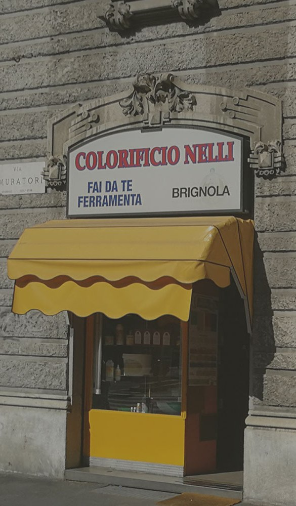

Colorificio · Belle arti · Ferramenta — Porta Romana, Milano
Il colore, dal 1954.
Non il solito colorificio. Qualunque tinta immagini, qui esiste — e se non c'è, la prepariamo noi.
La mazzetta
Millecinquecento tinte, e oltre
Una parete di colori, come le mazzette che sfogli in negozio. Passa il dito su una tinta per il suo nome.
↑ nomi indicativi — in negozio ne trovi molte di più
Il tintometro
Portaci un campione
Un ritaglio, una foto, un vecchio barattolo: identifichiamo la tonalità e la prepariamo su misura col tintometro. Come dicono i clienti, «mi hanno aiutato a replicare il colore esatto».
- 01Porti il campione da replicare
- 02Leggiamo e correggiamo la tinta
- 03La prepariamo nella quantità che ti serve
Cosa trovi
Molto più che barattoli
Pitture & vernici
Per pareti, legno e ferro, interni ed esterni. Marchi professionali.
Belle arti
Tele di ogni misura, colori, pennelli e accessori per artisti.
Ferramenta & fai-da-te
Utensili, minuteria e tutto l'occorrente per i lavori di casa.
Trattamenti
Prodotti e consigli per legno, marmo e superfici da recuperare.

La bottega
Sotto la tenda gialla, dal 1954
Settant'anni di colore all'angolo di Porta Romana. Un punto di riferimento per artisti, restauratori, imbianchini e per chi vuole solo il barattolo giusto — con il consiglio esperto dei titolari.
«Grande professionalità dei titolari»: è la frase che torna più spesso nelle recensioni. Qui il colore è un mestiere, non uno scaffale.
Le parole dei clienti
Consigliati e competenti
Recensioni reali da Google · 4,5 su 55.
Ottimi prodotti e grande professionalità dei titolari. Mi hanno aiutato sia a identificare le tonalità da replicare che con le specifiche tecniche di applicazione.
Mi hanno consigliato un ottimo prodotto (meno di 10 euro) per trattare il mio tavolo di marmo un po' graffiato.
Ho comprato delle tele per dipingere, anche misure grandi, a un ottimo prezzo.
Ragazzo super cordiale e molto esperto, un piacere acquistare.
Gentilezza, disponibilità e competenza: l'approccio più apprezzato.
Dove siamo
All'angolo di Porta Romana
Via Gerolamo Tiraboschi 220135 Milano
- Lunedì08:30–12:30 · 15–19
- Martedì08:30–12:30 · 15–19
- Mercoledì08:30–12:30 · 15–19
- Giovedì08:30–12:30 · 15–19
- Venerdì08:30–12:30 · 15–19
- Sabato08:30–12:30 · 15–19
- DomenicaChiuso
La mappa è di Google: aprendola, Google riceve il tuo indirizzo IP e può usare i suoi cookie.
Domande
Buono a sapersi
Riproducete un colore da un campione?
Sì. Con il tintometro replichiamo la tonalità che ci porti — da un ritaglio, una foto o un vecchio barattolo — e la prepariamo su misura.
Vendete anche materiale per belle arti?
Sì: tele di ogni misura, colori, pennelli e accessori, oltre a pitture, vernici, ferramenta e fai-da-te.
Fate consegne a domicilio?
Sì, consegniamo a domicilio a Milano, oltre al ritiro in negozio.
Quando siete aperti?
Da lunedì a sabato, 8:30–12:30 e 15:00–19:00. Domenica chiuso.